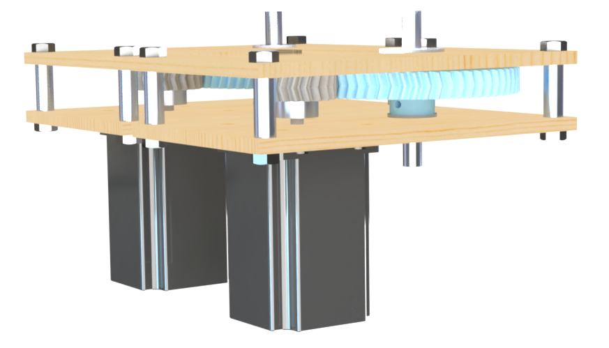
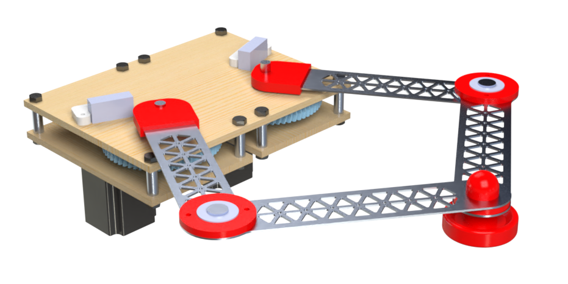

Mechanical Design
Gearbox

We used NEMA 23 stepper motors for our arm mechanism, but these motors did not produce enough torque. This required a gearbox for our motors. We have a 3:1 gearbox ratio using 3D printed PETG herringbone gears. Herringbone gears can carry more load than standard gears. Since we wanted to be able to print our gears, it was crucial that we achieved a strong gear.
To reduce friction with our shaft, we have shoulder bearings at each plate interface for our gearbox. Our shafts are 6061 aluminum that have a threaded hole for the large gear interface and arms are attached using a set screw. Our smaller gears are mounted to our stepper motors using have of a spider coupling. We used a press fit with a spider coupling to allow us to clamp to the shaft of the stepper motor. Our gearbox has one inch of clearance between the plates, maintained by 1 in alumnium standoffs fabricated from 3/8” 6061 aluminum rod stock. We use 1/4-20” bolts to constrain our gearbox.
Arm Assembly


We decided to design a parallel SCARA arm to move the striker across the table. This arm uses two NEMA 23 stepper motors and can move along two axes. The arm interfaces with the output shafts of the gearbox using a set screw. The joint between the arms contains a ball bearing and a thrust bearing. The ball bearing reduces the friction between the arms and the thrust bearing absorbs axial loads on the joint. This is all retained using tapped piece of aluminum with a bolt through it. Mounted to our gearbox are two limit switches. These allow us to home our arm so we are referencing from the same starting point at the beginning of each game.
Camera Mount
To track the location of the puck throughout gameplay, we used a camera mounted above the air hockey table. We used a wooden frame to achieve the height to view the entire play surface. The wooden frame interfaces with two 3D printed pieces that sit under the edge of the table, securing the stand. The camera slots into a 3D printed piece mounted at the top of the wooden frame.